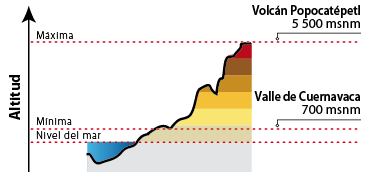

POPOCATEPETL


 4
4El Popocatépetl (en náhuatl: popocatepetl, "el cerro que humea""popoca, humear; tepetl, cerro") es un volcán activo localizado en el centro de México
El Popocatépetl (en náhuatl: popocatepetl, "el cerro que humea""popoca, humear; tepetl, cerro") es un volcán activo localizado en el centro de México
Hace ya miles de años, cuando el Imperio Azteca estaba en su esplendor y dominaba el Valle de México, como práctica común sometían a los pueblos vecinos, requiriéndoles un tributo obligatorio. Fue entonces cuando el cacique de los Tlaxcaltecas, acérrimos enemigos de los Aztecas, cansado de esta terrible opresión, decidió luchar por la libertad de su pueblo. El cacique tenía una hija, llamada Iztaccíhuatl, era la princesa más bella y depositó su amor en el joven Popocatépetl, uno de los más apuestos guerreros de su pueblo. Ambos se profesaban un inmenso amor, por lo que antes de partir a la guerra, Popocatépetl pidió al cacique la mano de la princesa Iztaccíhuatl. El padre accedió gustoso y prometió recibirlo con una gran celebración para darle la mano de su hija si regresaba victorioso de la batalla. El valiente guerrero aceptó, se preparó para partir y guardó en su corazón la promesa de que la princesa lo esperaría para consumar su amor. Al poco tiempo, un rival de amores de Popocatépetl, celoso del amor de ambos se profesaban, le dijo a la princesa Iztaccíhuatl que su amado había muerto durante el combate. Abatida por la tristeza y sin saber que todo era mentira, la princesa murió. Tiempo después, Popocatépetl regresó victorioso a su pueblo, con la esperanza de ver a su amada. A su llegada, recibió la terrible noticia sobre el fallecimiento de la princesa Iztaccíhuatl. Entristecido con la noticia, vagó por las calles durante varios días y noches, hasta que decidió hacer algo para honrar su amor y que el recuerdo de la princesa permaneciera en la memoria de los pueblos. Mandó construir una gran tumba ante el Sol, amontonando 10 cerros para formar una enorme montaña. Tomó entre sus brazos el cuerpo de su princesa, lo llevó a la cima y lo recostó inerte sobre la gran montaña. El joven guerrero le dio un beso póstumo, tomó una antorcha humeante y se arrodilló frente a su amada, para velar así, su sueño eterno. Desde aquel entonces permanecen juntos, uno frente a otro. Con el tiempo la nieve cubrió sus cuerpos, convirtiéndose en dos enormes volcanes que seguirán así hasta el final del mundo. La leyenda añade, que cuando el guerrero Popocatépetl se acuerda de su amada, su corazón que guarda el fuego de la pasión eterna, tiembla y su antorcha echa humo. Por ello hasta hoy en día, el volcán Popocatépetl continúa arrojando fumarolas.

El Popocatépetl ha sido uno de los volcanes más activos de México. Desde 1354 se han registrado 18 erupciones. En 1947 ocurrió una erupción de consideración, para iniciar así un periodo de actividad. Después, el 21 de diciembre de 1994 registró una explosión que produjo gas y cenizas que fueron transportados por los vientos dominantes a más de 25 km de distancia. Actualmente su actividad es moderada, pero constante, con emisión de fumarolas, compuestas de gases y vapor de agua, y repentinas e imprevistas expulsiones menores de ceniza y material volcánico. La última erupción violenta del volcán se registró en diciembre de 2000, lo que, siguiendo las predicciones de científicos, motivó la evacuación de miles de personas en las áreas cercanas al volcán. El 25 de diciembre de 2005 se produjo en el cráter del volcán una nueva explosión, que provocó una columna de humo y cenizas de tres kilómetros de altura y la expulsión de lava. Posteriormente en la mañana del 3 de junio de 2011, el Popocatépetl volvió a emitir grandes fumarolas sin causar daños. El 20 de noviembre de 2011 tuvo lugar una gran explosión que hizo temblar la tierra, escuchándose en las poblaciones cercanas a las laderas, pero sin mayor alteración. El volcán registró la mañana del 16 de enero de 2012 una fumarola de vapor de agua y ceniza, sin que esto represente riesgos para la población aledaña al coloso. El 16 de abril de 2012 el CENAPRED (Centro Nacional Para la Prevención de desastres), elevó el semáforo de alerta volcánica de fase amarillo 2 a fase amarillo 3 debido a la gran actividad que se ha estado presentando, sin que hasta el momento represente un peligro grave para la sociedad. A las 3:23 del 30 de abril de 2013, el volcán Popocatépetl arrojó fragmentos incandescentes a 800 metros del cráter sobre la ladera noreste, informó el Centro Nacional de Prevención de Desastres (CENAPRED). El 12 de mayo de 2013, luego del fuerte estruendo que se sintió en la localidad de Atlixco, la Coordinación Nacional de Protección Civil de la Secretaría de Gobernación, informó un cambio en el semáforo de la alerta volcánica, de amarillo fase 2 a fase 3 debido al incremento en la actividad del Volcán , por lo que entró en acción el Plan Operativo Popocatépetl, A través de un comunicado, la SEGOB dio a conocer que en una reunión con el Comité Científico Asesor, en el Centro Nacional de Prevención de Desastres (CENAPRED), que debido a que las dos semanas anteriores se observaron explosiones, eventos vulcano-tectónicos, episodios de tremor y trenes de exhalaciones, el Comité concluyó por consenso, emitir la recomendación. Sin embargo el 2 de junio de 2013 el CENAPRED regresó el nivel de alerta a Amarillo fase 2. Los días 17 y 18 de junio el volcán registró varios eventos explosivos de mayor magnitud, registrando Fumarolas que alcanzaron los 4 km sobre el nivel del cráter y expulsiones de roca incandescente que alcanzaron las faldas en el lado Sur-Oeste del coloso. La alerta se mantuvo en Amarillo Fase 2. El volcán entró en actividad el 7 de julio de 2013, lanzando ceniza claramente visible en poblaciones cercanas, la ceniza también alcanzó la Ciudad de México, expulsando flujos piroclásticos e incandescencia. El semáforo volcánico se sitúa en amarillo fase 3.

Antes de una erupción volcánica Lo primero que necesitamos, sea cual sea el desastre, es un kit de emergencia. Es posible que tengamos que sobrevivir sin ayuda después del fenómeno, lo cual significa que necesitaremos comida, agua y otros suministros en cantidad suficiente para resistir al menos tres días. Los cuerpos de emergencia acudirán a ayudarle, pero no pueden alcanzar a todo el mundo al mismo tiempo. Un kit de emergencia es una colección de artículos básicos que pueden ser necesarios en caso de desastre. Como no sabemos dónde vamos a estar cuando ocurra una emergencia, necesitamos preparar kits para casa, trabajo y vehículos. El kit de emergencia de casa debería incluir comida, agua y suministros para al menos tres días. Hay que tenerlo preparado por si debemos salir de casa rápidamente y asegurarnos de que todos los miembros de la familia saben dónde está. El kit del trabajo con agua y comida debería estar siempre listo para cogerlo e irnos en caso de evacuación. Es conveniente llevar un kit de emergencias (con comida, agua, botiquín de primeros auxilios, etc.) también en el coche por si nos quedamos atrapados. El kit básico debe contener: Comida no perecedera en cantidad suficiente para tres días Agua en cantidad suficiente para tres días Radio o televisión portátil a pilas y pilas de repuesto Linterna Botiquín de primeros auxilios Artículos de higiene (toallitas húmedas y papel higiénico) Cerillas y recipiente impermeable Silbato Ropas de repuesto Accesorios de cocina y utensilios para cocinar, incluyendo un abrelatas Fotocopias del carnet de identidad y las tarjetas de crédito Dinero en efectivo Artículos que respondan a necesidades especiales como recetas médicas, gafas, lentillas, etc. Suministros para niños, como pañales. En caso de vivir en una zona muy fría, debemos tener en cuenta que quizá no encontremos calor, así que debemos incluir una muda completa de ropa y zapatos por persona, incluyendo abrigos, bufandas, guantes, etc. Un par de gafas y mascarillas desechables para cada miembro de la familia Lo mejor es que nos mantengamos alejados de la zonas volcánicas, pero si vivimos cerca de un volcán, activo o no, debemos estar preparados para la evacuación en el momento que nos avisen de ello. Durante una erupción volcánica Si un volcán entra en erupción en su zona: Proceda inmediatamente a la evacuación para evitar los escombros volantes, gases calientes, explosiones laterales y corrientes de lava. Tenga cuidado con los flujos de lodo. El daño que estos flujos pueden provocar aumenta con las lluvias persistentes y se mueven con más rápido de lo que nosotros podemos andar o correr. Mire corriente arriba cuando vaya a cruzar un puente y nunca lo cruce si se aproxima un flujo de lodo. Use ropa que le cubra todo el cuerpo para proteger la piel Use gafas y mascarilla o un paño húmedo para facilitar la respiración Si se queda atrapado dentro de su hogar: Cierre ventanas, puertas y toda abertura al exterior Asegúrese de que los animales se encuentran bajo un refugio cubierto Si se queda atrapado en el exterior: Busque refugio bajo techo Evite áreas bajas donde los flujos de lodo pueden ser más peligrosos Después de una erupción volcánica Manténgase alejado de la ceniza volcánica No conduzca a través de ella, daña los vehículos Si tuvo que evacuar su hogar y al volver encuentra ladrones saqueándolo, no se enfrente a ellos. Pida ayuda. Hierva el agua que vaya a beber. Encienda la radio o televisión de su kit de emergencias para obtener noticias y posibles instrucciones Si padece alguna dolencia respiratoria, no salga de su hogar hasta que se confirme que no hay riesgo. Limpie la ceniza de los techos, puesto que pesa y puede provocar derrumbes Revise con precaución si funcionan luz, agua, gas y teléfono Ayude a las personas heridas o que han quedado atrapadas. Pida ayuda a los servicios de emergencia.

La ceniza volcánica es roca pulverizada. La combinación de gases ácidos y ceniza puede darse a varios kilómetros de la erupción y causar daño pulmonar a niños, ancianos y enfermos. No se asuste, las cenizas son más molestas que dañinas Permanezca en el interior. Si se encuentra en el exterior, busque refugio y use mascarilla o pañuelo para protegerse del polvo. No existe riesgo de gases tóxicos a pesar del olor. A menos que sea algo verdaderamente urgente, no utilice el teléfono. Encienda la radio y procure informarse En el hogar: Cubra toda abertura el exterior Coloque toallas húmedas donde haya corrientes de aire, así como en los umbrales de las puertas No encienda ventiladores ni secadoras de ropa Quite la ceniza de los canales y techos para evitar acumulaciones Si la fuente de agua tiene un sabor u olor ácido, utilice la almacenada en el calentador o en el tanque del inodoro. Para purificar el agua debe hervirla. No existe peligro alguno en comer verduras y frutas del jardín, siempre y cuando las lave primero No use jabón, se impregna de ceniza; use detergente en su lugar En su automóvil: No conduza a menos que sea absolutamente necesario Si tiene que hacerlo, hágalo despacio. La ceniza reduce la visibilidad, así que mantenga una distancia de seguridad adecuada con el coche que va delante de usted. Si el automóvil se para, sáquelo de la carretera para evitar accidentes y manténgase en el interior.
Se localiza a unos 72 km al sureste de la Ciudad de México, 43 km de Puebla, 63 km de Cuernavaca, y 53 km de Tlaxcala.

Es el segundo volcán más alto de México, con una altitud máxima de 5500 metros sobre el nivel del mar, sólo después del Citlaltépetl de 5610 msnm.
El Popocatépetl es un estratovolcán, y los estudios paleomagnéticos que se han hecho de él indican que tiene una edad aproximada de 730 000 años.